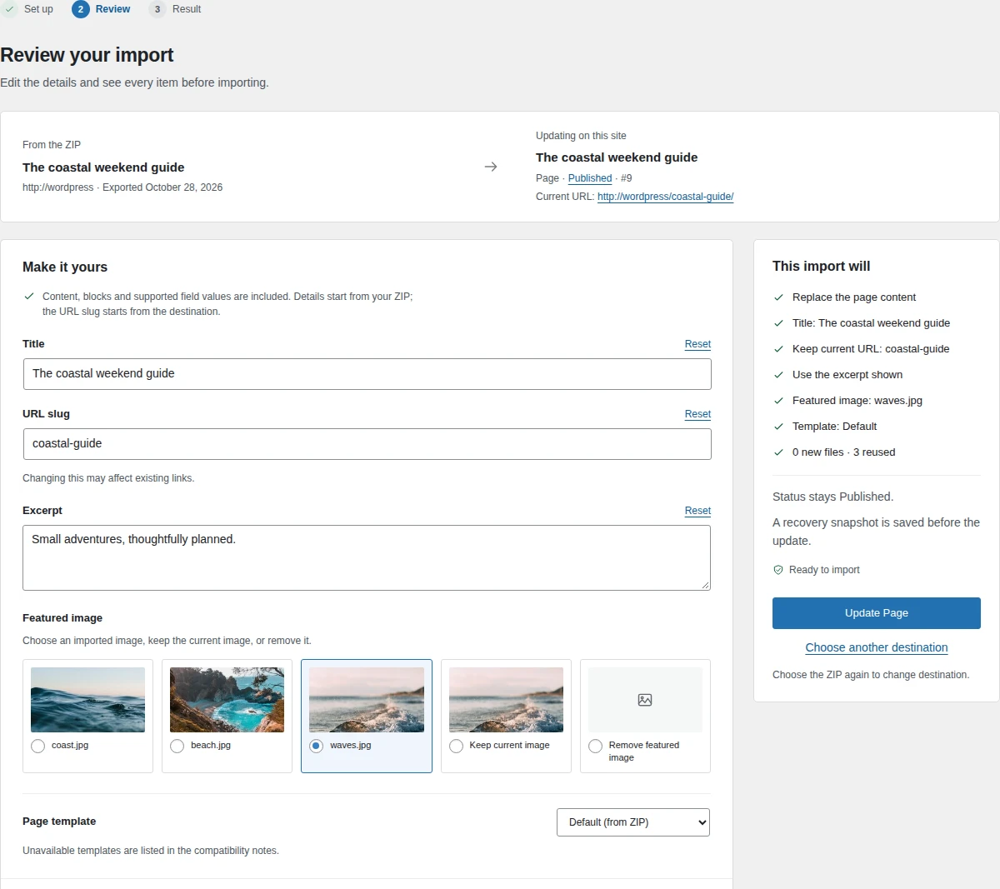
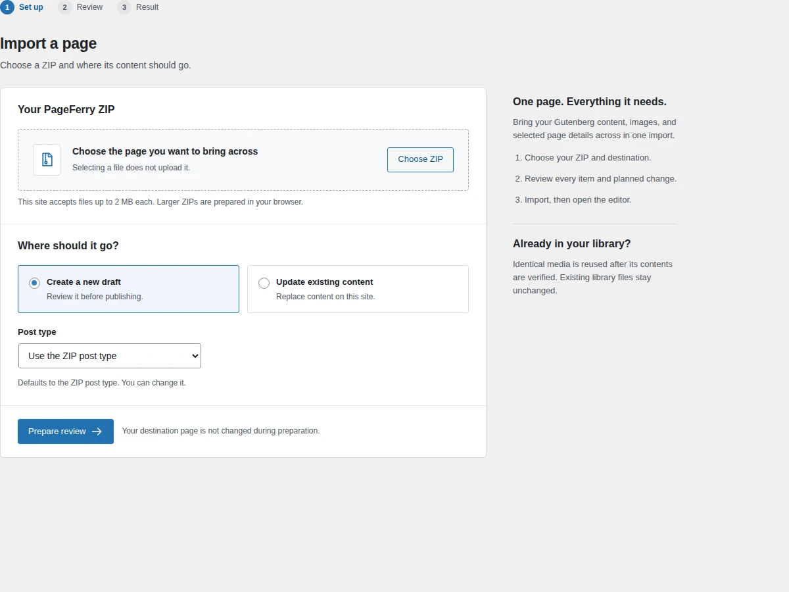
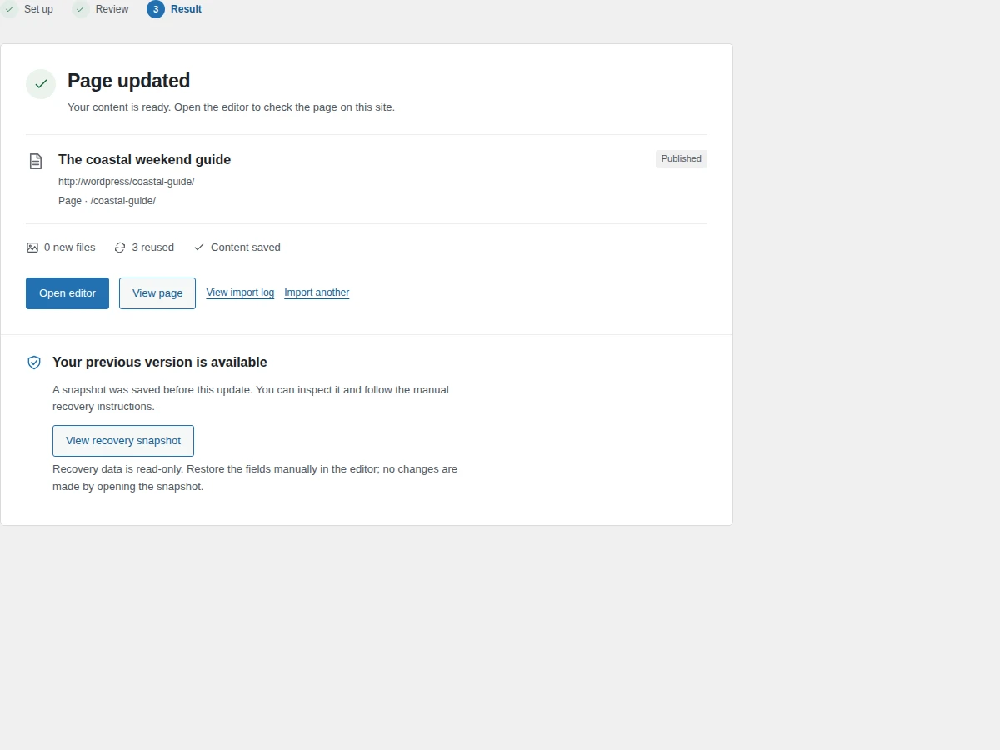

Pack your page.
Open your content in WordPress. Choose PageFerry Export → Ferry this page to download its blocks, media and supported details in a ZIP.
A simple way to move Gutenberg content between WordPress sites. One ZIP, a clear review, and images that come along.

EnlargeCheck your details and every planned change.
A page moves. Your site database stays in place.
WordPress 6.5+ · PHP 8.1+ · ZIP extension for export
Move finished content between sites, across hosts, or into a client handoff. No site pairing or account required.
Open your content in WordPress. Choose PageFerry Export → Ferry this page to download its blocks, media and supported details in a ZIP.
Go to Tools → PageFerry Import. Choose the ZIP and a new draft or existing destination. Prepare review, then check your details and media.
Confirm to import. PageFerry remaps images and reuses identical media. Open the editor and check the finished page before publishing a new draft.
A clear review, then a separate confirmation. Edit the title, URL slug, excerpt, featured image, template and terms before saving.

Enlarge
EnlargeReal PageFerry 1.3.5 screens. Coastal guide sample content on a demo WordPress site.
Built for one Gutenberg page, post or supported custom post type. Bring the content you finished, with the choices that make it fit its new home.
Check compatibilityPageFerry moves one page, post or supported custom post type at a time. It does not replace your site database or transfer themes, plugins, settings or an entire media library.
Yes. Choose the existing destination explicitly, review the planned changes and confirm. Its status stays the same, and its current URL slug is the default. A recovery snapshot is saved before the update.
PageFerry supports Gutenberg content. Bundles marked with Elementor, Divi, Beaver Builder, Bricks or WPBakery are refused with a clear explanation. The theme and any custom block plugins needed to render the page should be installed on the destination.
Media files travel with the ZIP and identical files can be reused. Supported ACF block and post values transfer with media remapping. Register matching ACF field groups on the destination first. Field definitions, site-wide ACF options and SEO metadata do not transfer; references to other posts or users may need checking.
Recovery snapshots show the previous content and details in a read-only view. Restore them manually in the WordPress editor. PageFerry does not provide a one-click rollback.
Larger ZIPs can be prepared in your browser and uploaded file by file. Each individual media file must fit the effective upload limit, and archive and total-size limits also apply. Reduce an oversized file or ask your host about a higher limit.
Selected highlights since 1.1.0.
Current version: 1.3.5.
Install the ZIP on both sites via Plugins → Add New → Upload Plugin.
Free · GPL-2.0-or-later · No account required